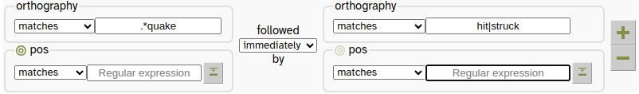
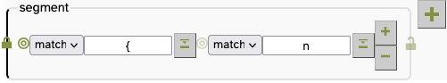
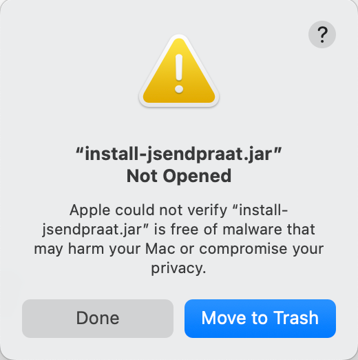
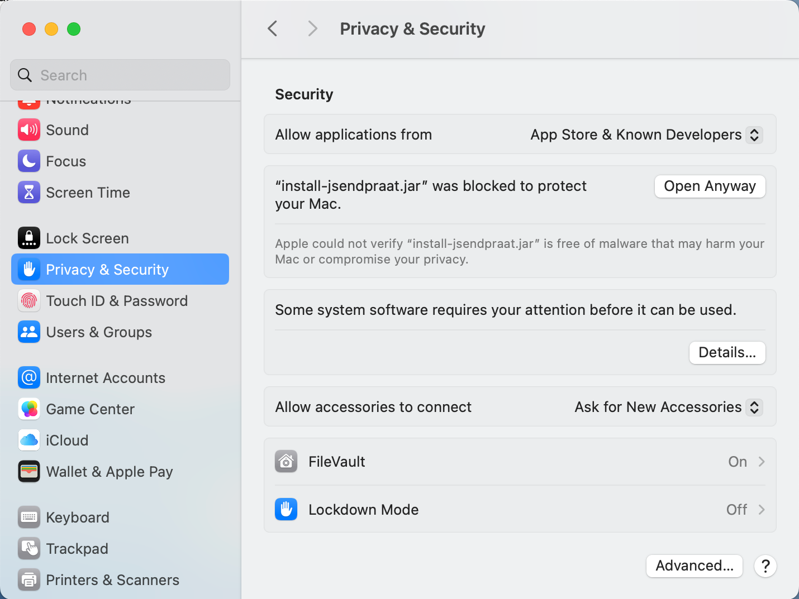
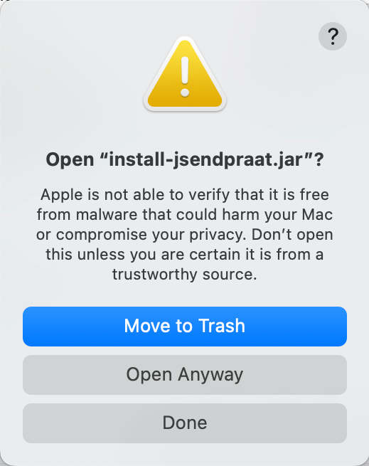
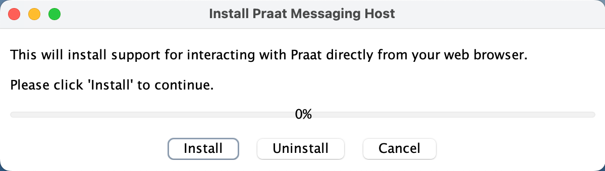
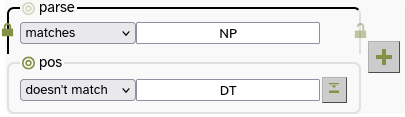

2 - Searching Annotation Layers
So far we have only searched the orthography layer - i.e. the ordinary spellings of words. But LaBB-CAT has been configured to generate a number of other annotation layers, which we will now explore.
- If you still have the results page open from the last worksheet, close it to return to the search page.
The annotation layers are grouped into a number of ‘projects’ to avoid clutter. We will initially be interested in the layers related to syntax.
Below the Pattern heading on the search page are four columns of checkboxes. The first column is labelled Projects, and the other columns have checkboxes for annotation layers of different granularities.
- Tick the syntax project.
Some additional layers will appear in the layer list on the right. - Tick the pos layer.
You will see that the ‘search matrix’ is now two layers high and two words wide.

The pos layer contains part-of-speech annotations that were automatically generated by the Stanford POS Tagger, which is free software developed by The Stanford Natural Languages Processing Group for tagging words in various languages with their parts of speech.
We are going to use the pos layer to identify “…quake” words that are followed by any verb…
- The pos box on the right has a
 button.
button.
Hover your mouse over it to see what it does, and then click it.
A panel will open that lists all the part-of-speech labels used by the Stanford POS Tagger, categorised by type. - Hover your mouse over different part-of-speech labels, and category names, to see what they represent.
- Click the VERB link.
A regular expression will be added to the pos search matrix that will identify any of the verb-type part-of-speech labels. - Press the button to close the Symbol Selector.
- Delete the
is|wastest from the orthography box above.
- Press Search.
You will see ‘…quake’ words followed by different verbs. - Click on the first result in the list.
This displays the transcript like you’ve seen before, except that now each word token has a part-of-speech tag above it. Some words have multiple tags (look for words with apostrophes).
3 - Frequency Analyses
Word Frequency
- Scroll to the top of the transcript you have open and select the Layers tab.
You will see a list of layer checkboxes, which determine which annotation layers are displayed. - Under projects to the left, tick the checkbox labelled “frequency”.
This will reveal new options under layers. - Tick the cobuild frequency layer.
After a short delay, each word will have a number above it.
The words have been tagged with their frequencies available in the CELEX lexicon, which come from the Collins Birmingham University International Language Database (COBUILD) corpus.
- Tick the word frequency layer
A second set of numbers will appear; this is the number of times the word appears in this demo corpus.
The word frequency layer annotations were added automatically by a module called the ‘Frequency Layer Manager’ which also keeps a straight word-list with word counts for each corpus…
- Click the home menu option at the top.
- Click the Frequency Layer Manager icon.
- You will see a drop-down box with each frequency layer in it.
Select Word Frequency and press Select. - Press the Export button at the bottom.
- Save and open the resulting CSV file.
You will see an alphabetical list of all the distinct words in the database, and next to each, a count of the number of tokens of that type.
Keyness
In addition to calculating word frequencies for direct analysis, frequencies can be compared to a reference corpus to calculated their log-likelihood ‘keyness’; a measure of whether the word is unusually frequent (a high positive keyness) or unusually infrequent (a low negative keyness).
See Rayson, P. and Garside, R. (2000). Comparing corpora using frequency profiling. In proceedings of the workshop on Comparing Corpora, held in conjunction with the 38th annual meeting of the Association for Computational Linguistics (ACL 2000). 1-8 October 2000, Hong Kong, pp. 1 - 6.
The Demo LaBB-CAT has been configured to compute keyness compared to the frequencies available in the COBUILD corpus.
- Select the home link on the menu.
- Click the ‘Keyness’ icon.
You will see a form that allows you to search for particular spelling patterns, or export a list. - Press the Search button without filling in the Pattern box, to list all words above the default Keyness threshold.
A list of words will be displayed, each word with its keyness metric. The high-positive words (which are unusually frequent) are listed first, with the low-negative words (unusually infrequent) below.
Unsurprisingly for this speech corpus, as compared to the mostly-written COBUILD corpus, words with high keyness include filled pauses like “um” and “ahh”, other words more likely in informal speech like “gonna” and “yeah”, topic-specific words like “earthquake” and “aftershocks”, and Canterbury place-names like “Christchurch” and “Brooklands”.
The Frequency Layer Manager can be configured to compute keyness of the data compared to any corpus for which you have word frequency data, or if you have several corpora within one LaBB-CAT database, each corpus can be compared to all the rest.
Linguistic Inquiry and Word Count
Linguistic Inquiry and Word Count (LIWC) text analysis can be done with the LIWC Layer Manager and categorised word lists.
See: https://www.liwc.app/help/howitworks
Or: Tausczik & Pennebaker (2010) The Psychological Meaning of Words: LIWC and Computerized Text Analysis Methods Journal of Language and Social Psychology 29 (1) 24-54
LIWC involves calculating the percentage of words in different categories. Categorised word lists can be compiled by hand, and needn’t be restricted to the categories shown here.
LIWC text analysis has been done on the Demo LaBB-CAT database, and also on the COBUILD corpus as a comparison corpus.
- Select the home option on the menu.
- Click the ‘LIWC’ icon.
You will see a horizontal bar graph: each bar represents category of words, with the bar length representing the percentage of that category’s usage in the database. - Tick the Cobuild checkbox on the left.
Bars representing the percentages for the COBUILD corpus will be added to the graph, for comparison. - Press the Export button.
- Save and open the resulting CSV file.
You will see that the file contains the list of categories, with two percentages for each category, first the percentage for the LaBB-CAT data, and then the percentage for the COBUILD corpus.
The bar graph can be used to clearly visualise similarities and differences between the corpora. The CSV file is useful for further analysis, or different visualisation options, using other tools.
4 - Alignment
Forced Alignment
Forced alignment is the automated processing of recordings of utterances and their orthographic transcripts in order to determine the start and end times of the individual speech sounds within words (phones).
LaBB-CAT can integrate with a number of forced alignment systems, including the Hidden Markov Model Toolkit (HTK), which is a speech recognition toolkit developed at Cambridge University.
In order to do forced alignment, HTK needs the following ingredients:
- a set of recordings broken up into short utterances,
- orthographic transcriptions of each utterance, and
- phonemic transcriptions of each of the words in each utterance.
In the demo database you have all of these three ingredients (pronunciations have been taken from the CELEX lexicon), and the data has already been force-aligned using HTK.
We will now explore some of the uses of force-aligned data.
Searching
- Select the search option on the menu at the top.
- Tick the segment layer, which is the layer that stores the force-aligned phones produced by HTK.
Now we’re going to do a search for tokens of the TRAP vowel /æ/.
- The segment box has a button to the right of it.
Hover the mouse over it to see what it says, and then press it.
You will see that a box opens with a bunch of phoneme symbols on it. - On the ‘Monophthong’ line, find the TRAP vowel
æand click it.
You will see that a{appears in the box.
The phonemic transcriptions used for forced-alignment came from the CELEX lexicon, and CELEX doesn’t use IPA symbols directly, it actually uses the ‘DISC’ encoding for phoneme labels, which uses ordinary ‘typewriter’ characters (ASCII), and uses exactly one character per phoneme. The DISC symbols are used for the segment layer labels.
As you can see in the table below, many of the correspondences between IPA and DISC are straightforward, but IPA symbols that involve unusual characters or more than one character have non-obvious DISC symbols.
| IPA | DISC | IPA | DISC | |||
| p | p |
pat | ɪ | I |
KIT | |
| b | b |
bad | ε | E |
DRESS | |
| t | t |
tack | æ | { |
TRAP | |
| d | d |
dad | ʌ | V |
STRUT | |
| k | k |
cad | ɒ | Q |
LOT | |
| g | g |
game | ʊ | U |
FOOT | |
| ŋ | N |
bang | ə | @ |
another | |
| m | m |
mat | i: | i |
FLEECE | |
| n | n |
nat | α: | # |
START | |
| l | l |
lad | ɔ: | $ |
THOUGHT | |
| r | r |
rat | u: | u |
GOOSE | |
| f | f |
fat | ɜ: | 3 |
NURSE | |
| v | v |
vat | eɪ | 1 |
FACE | |
| θ | T |
thin | αɪ | 2 |
PRICE | |
| ð | D |
then | ɔɪ | 4 |
CHOICE | |
| s | s |
sap | əʊ | 5 |
GOAT | |
| z | z |
zap | αʊ | 6 |
MOUTH | |
| ∫ | S |
sheep | ɪə | 7 |
NEAR | |
| ʒ | Z |
measure | εə | 8 |
SQUARE | |
| j | j |
yank | ʊə | 9 |
CURE | |
| x | x |
loch | æ | c |
timbre | |
| h | h |
had | ɑ̃ː | q |
détente | |
| w | w |
wet | æ̃ː | 0 |
lingerie | |
| ʧ | J |
cheap | ɒ̃ː | ~ |
bouillon | |
| ʤ | _ |
jeep | ||||
| ŋ̩ | C |
bacon | ||||
| m̩ | F |
idealism | ||||
| n̩ | H |
burden | ||||
| l̩ | P |
dangle |
The symbol for the TRAP vowel /æ/ is { which is why clicking æ in the Phoneme Symbol Selector adds a { to the search pattern.
- Press Search.
You will see that all the matches include /æ/ somewhere in the word. - Immediately to the right of the CSV Export button there is a button.
Hover your mouse over it to see what it does, and then press it.
You will see several columns of checkboxes for selecting:
- participant attributes
- transcript attributes
- annotations
These can all be exported with the CSV results.
- Under Participant tick gender and age_category.
- Under Transcript tick syllables per minute.
- Under Span tick type
- Under Phrase tick syllables per minute
- Under Word tick cobuild frequency
- Above the checkboxes, press the CSV Export button, and open the resulting CSV file.
You will see that, in addition to the columns you’ve seen before, the CSV file also includes:
- participant_gender - the gender of the person speaking;
- participant_age_category - their age bracket;
- transcript_syllables per minute - the overall articulation rate throughout the whole recording;
- Target type - a manually added annotation that labels what type of experience is being described;
- Target syllables per minute - the local articularion rate, during the utterance in which the match was uttered;
- Target cobuild frequency - the frequency of the word in the COBUILD corpus;
- Target segment - the label of the vowel you searched for;
- Target segment start - the start time of the vowel;
- Target segment end - the end time of the vowel.
This means you can include this data in any analysis you subsequently perform on the results data.
You have seen that after forced alignment, it’s possible to identify tokens of individual speech sounds. You can also match for the context of the speech sounds within the word.
- Close the results tab and return to the search page.
You will see that on the left edge of the segment box there is an open padlock icon.
- Hover your mouse over the padlock to see what it says, and then click it.
The padlock closes. - Press Search.
There are much fewer matches now, as you’ll see only words where the matched segment is at the beginning of the word. - Close the results tab and return to the search page.
You can also match patterns of multiple segments within the word. Let’s say we’re interested in words that start with the TRAP vowel, followed by /n/. We can use the segment layer to search on the basis of pronunciation, matching multiple segments within the word.
- Inside the segment box, immediately to the right of the Phoneme Symbol Selector button is a small button .
Press it.
You will see that this adds another segment column within the word. - Enter
nin the second segment box.
 - Press Search and check the results are what you would expect.
You can also export segment tokens that match search patterns to a CSV file, including the start/end times for analysis or further processing. In fact, you can also export other annotations, and transcript/participant attributes.
- On the results page, press the CSV Export button.
- Save and open the resulting file.
As youve seen before, the last two columns are:
- Target segment start - the start time of the vowel;
- Target segment end - the end time of the vowel.
These can be used for calculating vowel duration, but also for acoustic measurement of the matched segments…
5 - Praat
Acoustic Measurement
Given a CSV file with token start/end times, LaBB-CAT can extract acoustic measurements on the speech sounds using Praat.
The following steps work even if you don’t have Praat installed on your own computer, because Praat is used on the LaBB-CAT server …
- In LaBB-CAT, select the extract menu option.
- Select the process with praat option.
- Click Browse and select the CSV results that you saved above.
You will see a form to fill in, and the first couple of settings (Transcript Name column and Participant column) should be already filled in). - For the Start Time column, ensure that the Target segment start option is selected.
- For the End Time column, ensure the Target segment end option is selected.
These two settings define the start/end times of the vowel For some measurements you might extract from Praat, processing signal that includes surrounding context is usually a good idea. You’ll see there’s a setting for that (which you can leave at the default of 0.025s), and you will see options for various measurements.
The default options are for F1 and F2 only, but if you feel like getting other measurements, feel free to tick those options too. You can expand each section with the button to reveal more settings, which allow you to specify more detail about how Praat should do its computations. Again, feel free to look at those and try different settings.
- Press Process.
You will see a progress bar while LaBB-CAT generates Praat scripts and runs them. - Once Praat has finished processing the intervals, you will get a CSV file (you might have to click the CSV file with measurements link) - save and open it.
You may find that the CSV text data displays directly in your browser window.
If this happens, just save the file with the keys, and open it with Excel or whatever program you have to open CSV files.
You will see that it’s a copy of the CSV file you uploaded, with some extra columns added on the right.
Depending on your settings, this will include at least one column per measurement you selected (for formant measurmenets, there is also a column that contains the time at which the measurements were taken), and a final column called Error which is hopefully blank, but which might contain errors reported back by Praat (e.g. if it couldn’t find the audio file or ran into any other problem during processing).
Praat Browser Integration
The following steps work only if:
- if you Java and Praat installed on your own computer, and
- you’re using a Chrome, Edge, or Firefox (i.e. not Safari)
If you don’t use Praat, or don’t have Praat or Java installed, you can skip this section.
We have previously seen that any transcript can be exported as a Praat TextGrid from the formats menu, so you can export a TextGrid and open it in Praat (if you have it installed on your computer) to check the segment layer alignments.
LaBB-CAT also integrates directly with Praat. With Praat integration installed, you can inspect alignments directly from the transcript page, and with sufficient access, you can also correct them by moving the alignments in Praat and then saving them back to LaBB-CAT.
LaBB-CAT’s browser integration with Praat currently does not work with Safari, so if you’re using a Mac, ensure you try the steps below in Google Chrome or Mozilla Firefox.
First, the LaBB-CAT/Praat integration has to be set up; this only has to be done once:
- Open any transcript.
- On the Layers tab tick the segment layer.
(If there are other layers preselected, you can un-tick them)
After a short delay, you will see a phonemic transcription below each word in the transcript – these are the phone annotations created by HTK. - On the top-right of the transcript page, above the playback controls, there’s a Praat icon - click it.
- Follow the instructions that appear (these vary depending on what web browser you use).
You may need to grant a browser extension permission to install, and it’s possible you will need a connection to the internet in order to download this extension.
- Once you’ve installed the browser extension, return to the transcript page.
- Press OK on the message that appears, to reload the page.
- Click on any line, and select the ‘Open Text Grid in Praat’ option on the menu.
You will see a page with three-step instructions for finishing the Praat integration.
Assuming you already have Praat and Java installed, you just have to do the third step. i.e. download and run a program called “install-jsendpraat.jar”.
- Click the install-jsendpraat.jar link, save the resulting file.
- Double-click the program you just saved.
- On the window that appears, press the Install button.
When you try to run install-jsendpraat.jar on a Mac, you may see the following message:

If so:
- Press Done.
- Click the Apple icon on the top left corner of the screen to open the menu.
- Select System Settings…
- On the left hand side, select the Privacy and Security option.
- Scroll to the bottom of the page.
Under Security you should seem a message saying
“install-sendpraat.jar” was blocked to protect your Mac
 - Press Open Anyway
You will see a warning message:
 - Press Open Anyway
You may see a further prompt to allow this:
Finally you should see the installer open:

Then you can press Install.
You also may be asked where Praat is installed; Navigate to the location where Praat is installed, and double-click the “Praat.exe” file (on some systems the file may simply be called “Praat”). The Praat program may open, and then immediately close, as LaBB-CAT tests it can communicate with Praat.
If in doubt, check the  online help on the transcript page; it has a section explaining how to set up Praat integration on various browsers and operating systems.
online help on the transcript page; it has a section explaining how to set up Praat integration on various browsers and operating systems.
- Close the instructions page.
Now Praat integration has been set up, and you should be able to access Praat options in the transcript page from now on…
- Back in the transcript page you had open earlier, click on any line, and select the Open Text Grid option on the menu.
After a short delay, Praat should open, and show you a spectrogram of the line’s audio, with a TextGrid below that includes the words and the segments. - If you click on a word, and hit the tabtab key, the word’s interval is played. Try out various words, and see what you think about how accurate HTK has been with its alignment.
- Try this out with different lines in the transcript.
You will see that in some cases the alignment is pretty good, and in other cases, it’s not so good. In the not-so-good cases, see if you can figure out why HTK got it wrong.
If you had ‘edit’ rather than ‘read-only’ permissions in LaBB-CAT, then each time you opened an utterance in Praat, a button would appear in the transcript to the left of the line, labelled Import Changes. This button would allow you to save any adjustments you might want to make to the alignments back into the LaBB-CAT database.

This mechanism can also be used to add other annotations from Praat into LaBB-CAT annotation layers.
6 - Syntax
The Stanford Parser is an open-source PCFG parser that can use grammars for a variety of languages including English.
LaBB-CAT includes a Layer Manager that handles integration with the parser. The Stanford Parser Layer Manager:
- extracts chunks of transcripts (ideally sentences or clauses),
- gives them to the Stanford Parser for processing, which produces a ‘best parse’ for the utterance provided, and
- saves the parse on a ‘tree’ layer, and optionally saves the resulting part-of-speech tags on a word layer.
One of the problems with parsing speech is that speakers often don’t speak in complete, well-formed sentences. In addition, the demo corpus you are using was not generally transcribed with parsing in mind, and so grammatically complete units have not been marked with full-stops, commas, etc. (Instead, full-stop has been used to mark short pauses in speech).
For these reasons, the parses you will see in this data may not be perfect. However, it’s possible to get a sense of the kinds of things that could be achieved with well-formed written texts, or speech that has been transcribed with grammatical punctuation included.
- Select the transcripts option on the menu.
One transcript in the database has delimiters inserted which divide the transcript into more or less grammatical units. As the ‘full-stop’ symbol is already being used to mark pauses, the ‘vertical bar’ symbol | has been used as a grammatical delimiter.
The transcript is called BR2044_OllyOhlson-b.eaf
- In the Transcript box, type:
olly
After a short pause, BR2044_OllyOhlson-b.eaf will be the only transcript in the filtered list. - Click BR2044_OllyOhlson-b.eaf
- On the Layers tab, untick all except the word layer, to avoid clutter.
- Tick the language layer.
Scrolling down, you will see that, although the transcript is mostly in English, there are some sections in Te Reo Māori. These have been annotated as such on the language layer, which allows LaBB-CAT to generate other layer differently, depending on what language the speech is in.
- At the top of the transcript, tick the syntax project.
This reveals three layers. - Tick the parse layer.
You will see that above the words, there are bracketing annotations that are labelled with parts-of-speech or phrase labels.
Each of these brackets represents a syntactic constituent constructed by the parser, smaller constituents at the bottom, building into larger constituents going up.
You will also notice that there are no syntactic constituent annotations on utterances in Te Reo Māori. The Stanford Parser doesn’t have a grammar for Māori, so LaBB-CAT has excluded those utterances from this processing.
- Click on any constituent label (e.g. “NP” or “S”).
A new window will open, which shows the selected utterance, using the familiar ‘upside-down tree’ representation.
If the tree appears far off and small, you can make it larger by widening the window, or ‘zooming in’ with you mouse wheel.
You can also search the parses themselves.
- Close the parse tree window.
- Select the search option on the menu at the top of the page.
- Tick the syntax project.
- Tick the parse and pos layers.
On the parse layer you’ll see that you can enter a search expression for annotations on that layer, just like any other.
However, it also has an open-padlock icon before and after the pattern. If you click the padlock before the pattern, it will anchor the search to the first word in the matching constituent. Similarly the padlock after the pattern anchors to the last word in the constituent.
Let’s say you want all the noun phrases that don’t start with a determiner like “the”, “this”, “a”, etc.
- On the parse layer, enter a pattern that matches NP (noun phrase) …
- ...and click the padlock to anchor to the first word in the constituent.
- On the pos layer, enter a pattern that would match DT (determiner)…
- ...and in the dropdown box before the pattern, select doesn’t match.
This will match NP-initial words who have an annotation that doesn’t match “DT” on the pos layer.

- Press Search.
- When the search finishes, click on the first result to open the transcript.
You should see that lots of noun phrases have been identified, but nothing starting with “the”, “a”, “that”, or any other determiner.
In this worksheet you have seen that:
- annotations can be added to transcripts in layers, either manually or automatically using ‘Layer Manager’ modules.
- Yous searches can include annotation layers as well as orthography.
- Layers can be optionally displayed in transcripts.
- Words can be tagged with their frequency in the COBUILD corpus or in the corpus itself,
- unusually frequent or infrequent words can be identified, and
- LIWC text analysis can be automatically performed.
- Forced Alignment can be used to ascertain the start/end times of words and phones,
- individual phone tokens can be searched for and extracted, and
- acoustic measurements for matching phones can also be made.
- The resulting alignments can be inspected (and corrected) directly from the transcript page.
- the Stanford Parser can we used to annotate transcripts with part-of-speech tags and constituent annotations, and
- the resulting annotations can be included in syntax-based searches.
- Phrases can be language-tagged so that they can be processed differently from the surrounding utterances.